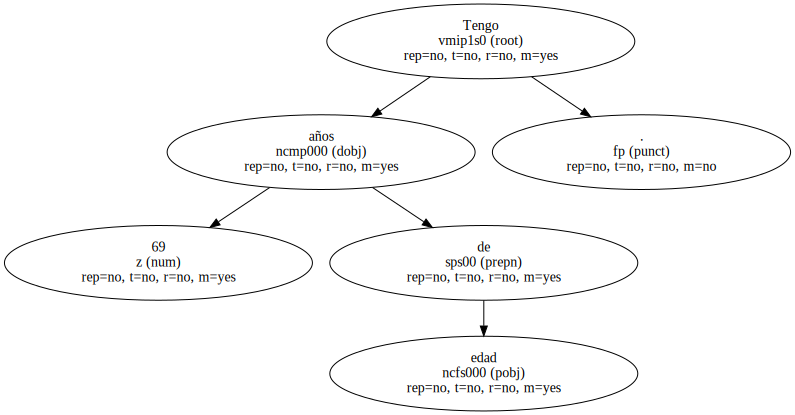
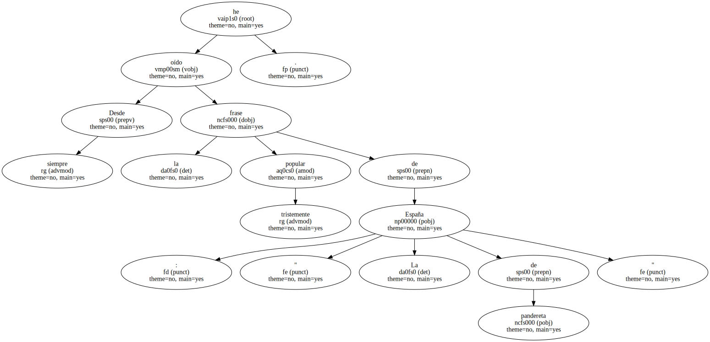
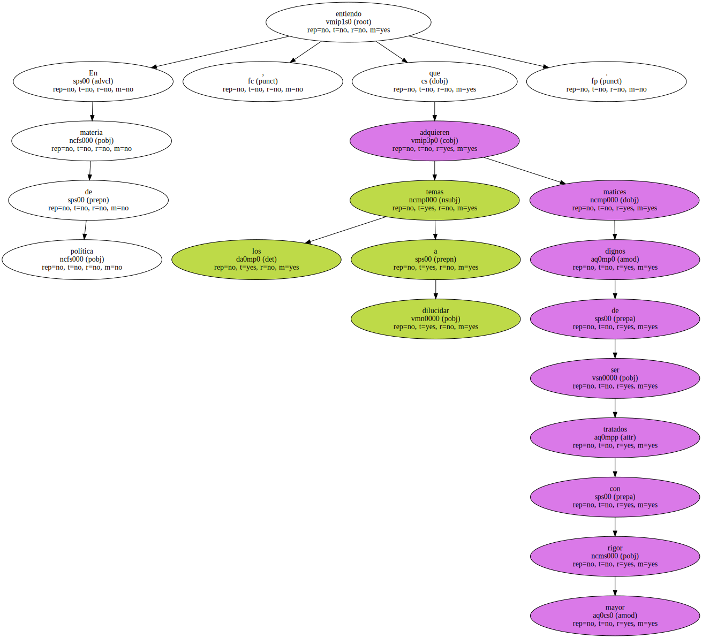
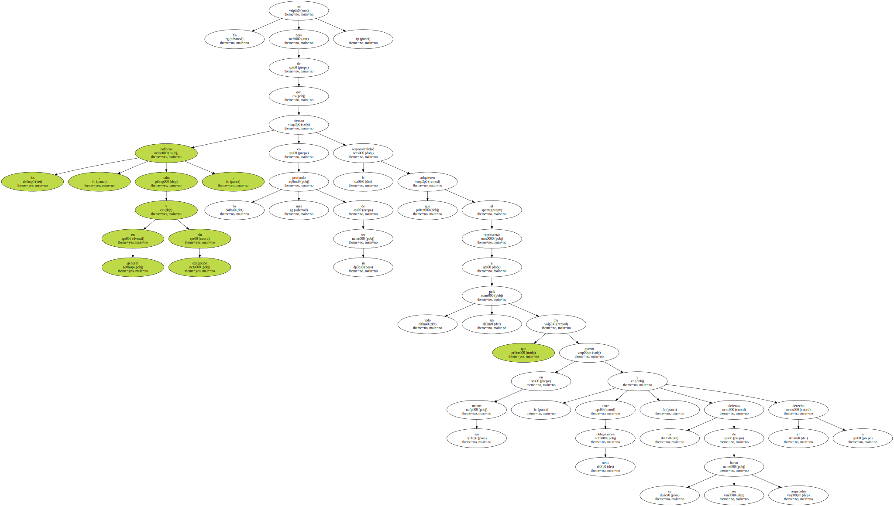
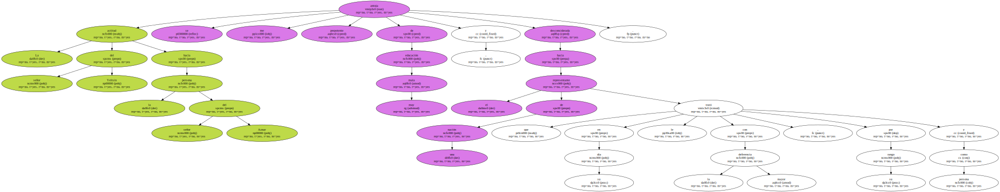

Ante todo , educación.

Tengo 69 años de edad.
Desde siempre he oído la tristemente popular frase de : " La España de pandereta ".
En materia de política , entiendo que los temas a dilucidar adquieren matices dignos de ser tratados con mayor rigor.
Ya es hora de que los políticos , todos en general y sin excepción , sientan en lo más profundo de su ser la responsabilidad que adquieren al representar a todo un país que ha puesto en sus manos , entre otras obligaciones , la defensa de su honor y el derecho a ser respetados.
La actitud del señor Yeltsin hacia la persona del señor Aznar se me antoja prepotente , de muy mala educación y desconsiderada hacia el representante de una nación que en su día le trató con la mayor deferencia , por su rango y como persona.
